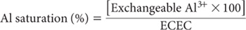

Aluminium saturation of the soil ECEC has been used with variable success to indicate when Al toxicity could prejudice plant growth. Bruce et al. (1988) and Bruce et al. (1989) found that plant roots could tolerate high Al saturations at low soil solution ionic strengths. Conversely, Al toxicity can exist at relatively low levels of Al saturation when soil ionic strength is elevated following additions of soluble inorganic fertilisers. Accordingly, values for percent Al saturation must be interpreted with care.
This calculation is based on exchangeable Al3+ from Method 15G1 and ECEC from Method 15J1, both expressed as cmolc/kg.

where both exchangeable Al and ECEC are expressed as cmolc/kg on an oven-dry basis. Report Al saturation (%), calculated on an oven-dry basis.